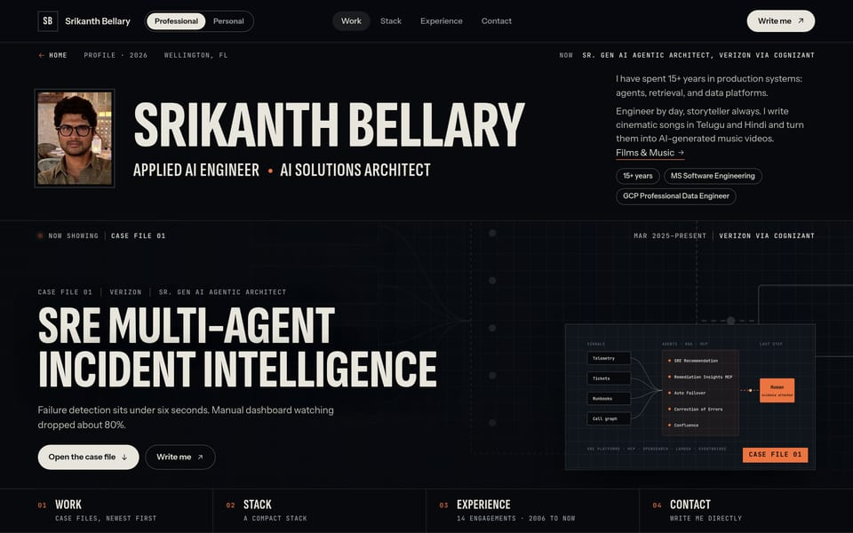
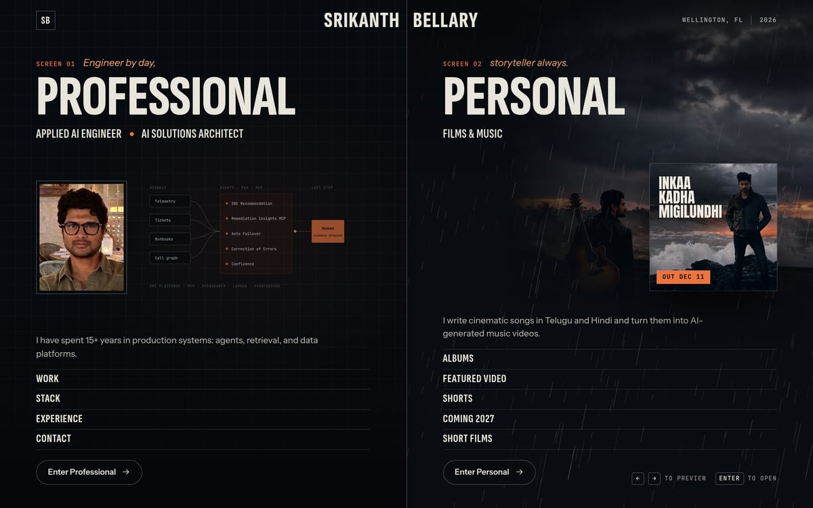
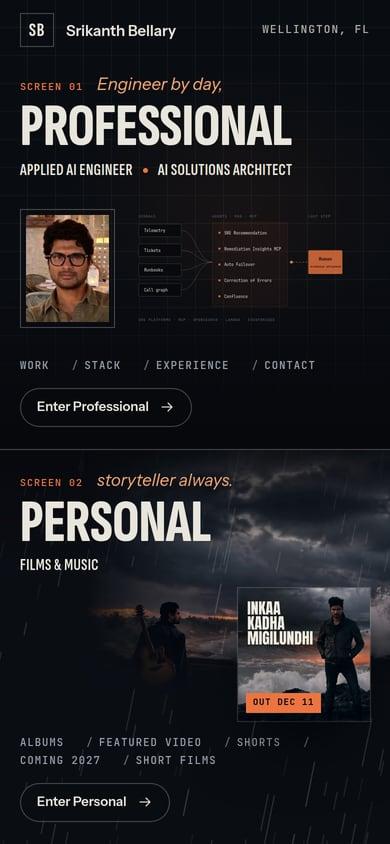
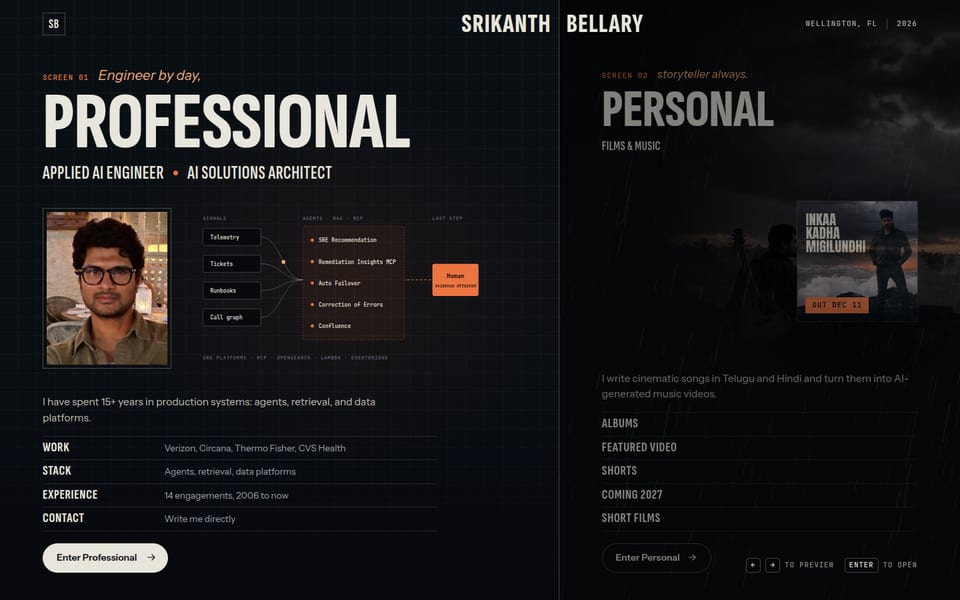
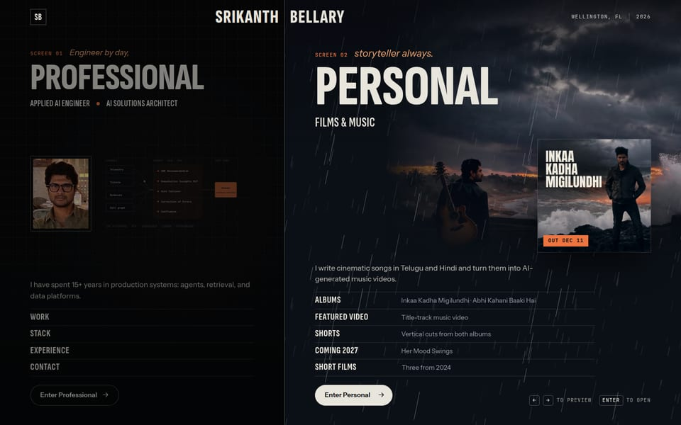
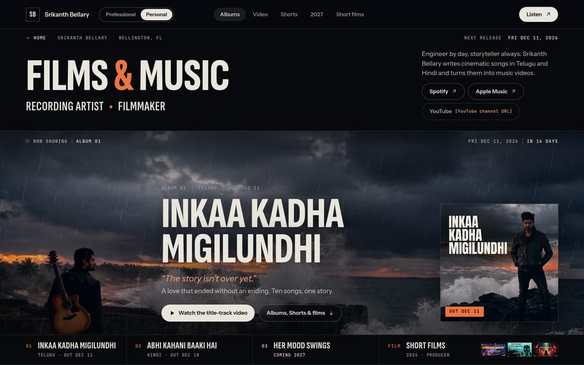
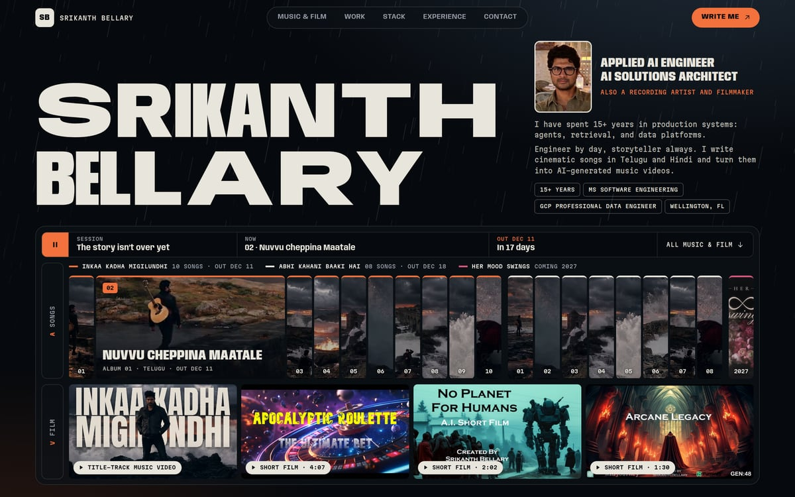
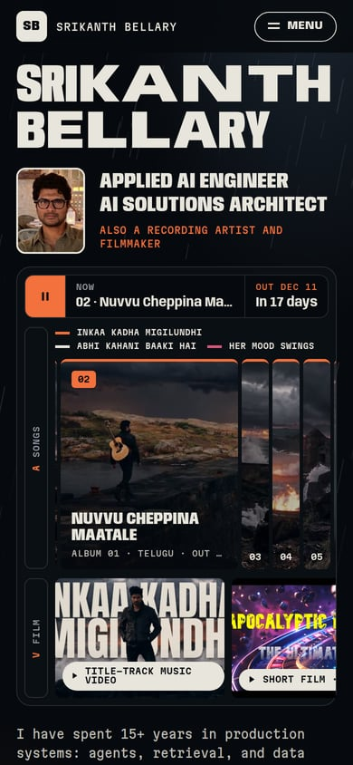

Professional
Name, roles, portrait and the overview, then the current engagement as the feature. Below it: work, stack, experience and contact, as on the live site. No music here except one line and a link across.
Mockups for review · November 2026 · nothing here is live
Direction A was chosen. In this round the site opens on a choice between two sides: Professional, the IT and AI engineering work, and Personal, the films and music. One click goes in. Each side has a way home and a way across.


Two screens, like a cinema with two films on. Screen 01 is Professional: the portrait beside the incident-path drawing, on a drafting grid. Screen 02 is Personal: the storm, the figure with the guitar seen from behind, and the album cover. The line from the brief runs across both: “Engineer by day,” on one side, “storyteller always.” on the other. The name sits on the seam, one half on each screen.



Name, roles, portrait and the overview, then the current engagement as the feature. Below it: work, stack, experience and contact, as on the live site. No music here except one line and a link across.

Films & Music: the albums with their tracklists and loops, the featured video, the Shorts strip, Coming 2027 and the three short films. The portrait does not appear on this side.
Both pages carry a switch in the top bar (Professional / Personal), a Home link at the top, and a door to the other side above the footer.
These two stay as they were in the first round: a single page each, no gateway. The first-round page for Direction A was replaced by the three pages above; its screenshots are in screenshots/final/.



